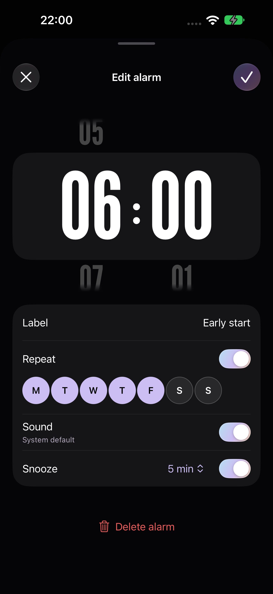
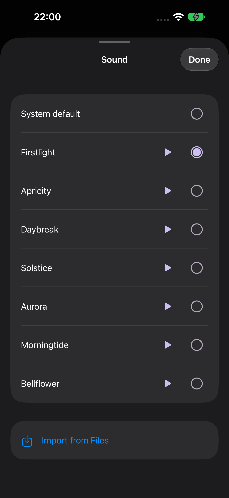
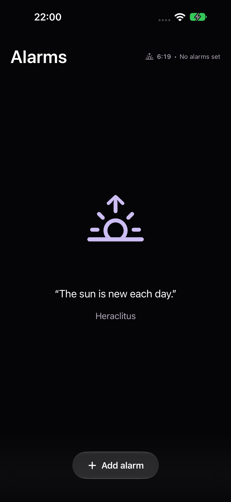

A little
more
morning.
A new iPhone alarm App for a clearer view of when your day begins.
Ask for beta accessCurrently in beta · iPhone · iOS 26 or later

Let the morning
set the mood.
Cool before dawn. Warm as the sun arrives. With optional location access, your alarm colours follow the light around your local dawn and sunrise.
Blue fading into violet.
Purple meeting soft orange.
Golden yellow and a warmer glow.
Illustrative times. Actual colours use approximate local solar times. You choose when each alarm rings.
A few taps.
All set.
Roll to your time, choose your days and give the alarm a name. Everything you need for tomorrow, together in one place.
- Know how long you haveHours and minutes until your next alarm, right on the card.
- Make a routineRepeat on the days that work for you.
- A little longer, your wayChoose a snooze interval from 1 to 60 minutes.
Start with
a good note.
Listen before you choose. Pick an included tone, use the iOS default, or import something of your own from Files.
Imported sounds use up to the first 29 seconds.
Alarm loudness and haptics are managed by iOS.

A quiet moment.
A fresh start.
Even an empty alarm list has a little light. A lilac dawn icon and a morning quote leave room for whatever comes next.
Your alarms and dawn calculations stay on your iPhone. Read about privacy, including beta diagnostics.

Before tomorrow.
Will it ring while my phone is locked?
Sunwake uses Apple's AlarmKit to schedule alarms, including while your iPhone is locked. Allow alarm access when prompted. Custom-tone delivery while locked has been confirmed in our device testing.
Why does Sunwake ask for my location?
Location is optional. It lets Sunwake calculate approximate local dawn and sunrise on your iPhone for the colours and dawn time. Your chosen alarm times work without it.
Does my alarm time move with sunrise?
You set each alarm time yourself. Dawn and sunrise affect the colours and the solar time shown in the app.
Can I choose my own sound?
Yes. Preview an included tone or import audio from Files. Sunwake keeps a private playable copy of up to the first 29 seconds.
Which iPhones can run Sunwake?
Sunwake requires an iPhone running iOS 26 or later. The current beta is shared through Apple's TestFlight app.
How can I join the beta?
Email hello@timgreen.design to ask for an invitation. External TestFlight builds are subject to Apple's beta review.
Tomorrow looks brighter.
Sunwake is taking its first steps. Come try it.
Ask for beta access